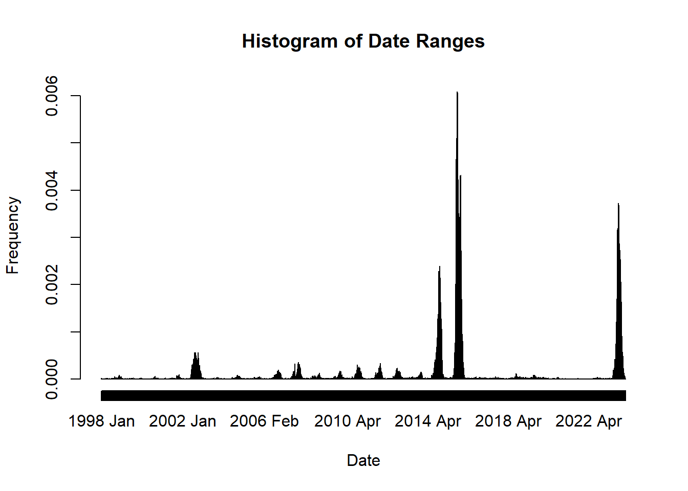
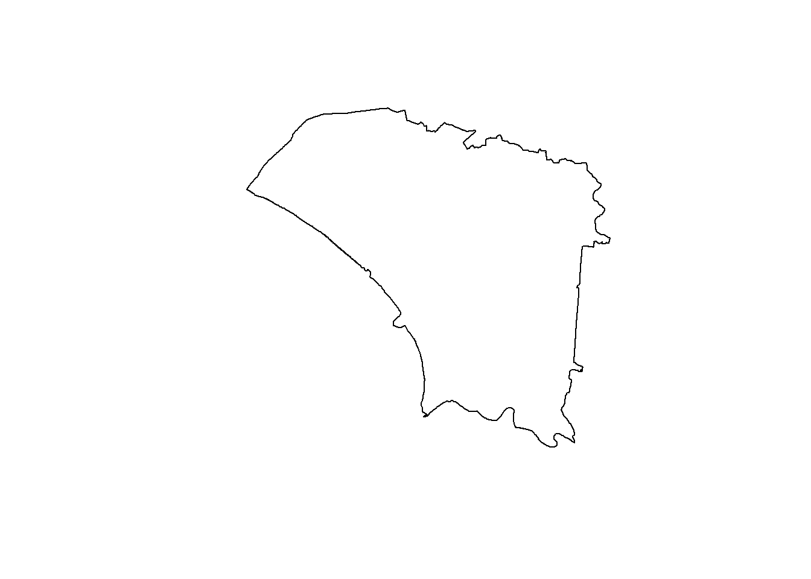

pacman::p_load(sf, spdep, sfdep, tmap, tidyverse, smoothr, lubridate, nngeo)Take-Home Exercise 2
1.0 Overview
2.0 Setup
3.0 Data Wrangling
tn <- st_read(dsn="data/geospatial",
layer="TAINAN_VILLAGE")Reading layer `TAINAN_VILLAGE' from data source
`C:\chesterchia\IS415-GAA\Take-home_Ex\Take-home_Ex02\data\geospatial'
using driver `ESRI Shapefile'
Simple feature collection with 649 features and 10 fields
Geometry type: POLYGON
Dimension: XY
Bounding box: xmin: 120.0269 ymin: 22.88751 xmax: 120.6563 ymax: 23.41374
Geodetic CRS: TWD97dd <- read_csv("data/aspatial/Dengue_Daily.csv")dd <- dd[, c(1, 10, 11)]
names(dd)[1] "發病日" "最小統計區中心點X" "最小統計區中心點Y"names(dd) <- c("Onset", "X", "Y")
names(dd)[1] "Onset" "X" "Y" options(digits = 15)
dd[, c(2, 3)] <- lapply(dd[, c(2, 3)], as.numeric)
head(dd)# A tibble: 6 × 3
Onset X Y
<date> <dbl> <dbl>
1 1998-01-02 121. 22.5
2 1998-01-03 120. 22.5
3 1998-01-13 122. 24.7
4 1998-01-15 120. 22.6
5 1998-01-20 122. 24.7
6 1998-01-22 NA NA sum(apply(dd, 1, function(x) any(is.na(x))))[1] 780dd <- na.omit(dd)
sum(apply(dd, 1, function(x) any(is.na(x))))[1] 0hist(dd$Onset, breaks = "days", xlab = "Date", ylab = "Frequency", main = "Histogram of Date Ranges")
st_crs(tn)Coordinate Reference System:
User input: TWD97
wkt:
GEOGCRS["TWD97",
DATUM["Taiwan Datum 1997",
ELLIPSOID["GRS 1980",6378137,298.257222101,
LENGTHUNIT["metre",1]]],
PRIMEM["Greenwich",0,
ANGLEUNIT["degree",0.0174532925199433]],
CS[ellipsoidal,2],
AXIS["geodetic latitude (Lat)",north,
ORDER[1],
ANGLEUNIT["degree",0.0174532925199433]],
AXIS["geodetic longitude (Lon)",east,
ORDER[2],
ANGLEUNIT["degree",0.0174532925199433]],
USAGE[
SCOPE["Horizontal component of 3D system."],
AREA["Taiwan, Republic of China - onshore and offshore - Taiwan Island, Penghu (Pescadores) Islands."],
BBOX[17.36,114.32,26.96,123.61]],
ID["EPSG",3824]]dd_sf <- st_as_sf(dd, coords = c("X", "Y"),
crs = 3824)
st_crs(dd_sf)Coordinate Reference System:
User input: EPSG:3824
wkt:
GEOGCRS["TWD97",
DATUM["Taiwan Datum 1997",
ELLIPSOID["GRS 1980",6378137,298.257222101,
LENGTHUNIT["metre",1]]],
PRIMEM["Greenwich",0,
ANGLEUNIT["degree",0.0174532925199433]],
CS[ellipsoidal,2],
AXIS["geodetic latitude (Lat)",north,
ORDER[1],
ANGLEUNIT["degree",0.0174532925199433]],
AXIS["geodetic longitude (Lon)",east,
ORDER[2],
ANGLEUNIT["degree",0.0174532925199433]],
USAGE[
SCOPE["Horizontal component of 3D system."],
AREA["Taiwan, Republic of China - onshore and offshore - Taiwan Island, Penghu (Pescadores) Islands."],
BBOX[17.36,114.32,26.96,123.61]],
ID["EPSG",3824]]head(dd_sf)Simple feature collection with 6 features and 1 field
Geometry type: POINT
Dimension: XY
Bounding box: xmin: 120.338158907 ymin: 22.46420665 xmax: 121.798235373 ymax: 24.982467229
Geodetic CRS: TWD97
# A tibble: 6 × 2
Onset geometry
<date> <POINT [°]>
1 1998-01-02 (120.505898941 22.46420665)
2 1998-01-03 (120.45365746 22.466338948)
3 1998-01-13 (121.751433765 24.749214667)
4 1998-01-15 (120.338158907 22.6303167)
5 1998-01-20 (121.798235373 24.684507639)
6 1998-01-23 (121.547480075 24.982467229)tnsz <- tn[tn$TOWNID %in% c("D01", "D02", "D04", "D06", "D07", "D08", "D32", "D39"), ] %>%
subset(select = -NOTE)head(tnsz)Simple feature collection with 6 features and 9 fields
Geometry type: POLYGON
Dimension: XY
Bounding box: xmin: 120.093638 ymin: 22.9155962890001 xmax: 120.258510056 ymax: 23.0882695690001
Geodetic CRS: TWD97
VILLCODE COUNTYNAME TOWNNAME VILLNAME VILLENG COUNTYID COUNTYCODE
2 67000350032 臺南市 安南區 青草里 Qingcao Vil. D 67000
18 67000270011 臺南市 仁德區 保安里 Bao'an Vil. D 67000
66 67000370005 臺南市 中西區 赤嵌里 Chihkan Vil. D 67000
67 67000330004 臺南市 南區 大成里 Dacheng Vil. D 67000
68 67000350028 臺南市 安南區 城北里 Chengbei Vil. D 67000
69 67000350030 臺南市 安南區 城南里 Chengnan Vil. D 67000
TOWNID TOWNCODE geometry
2 D06 67000350 POLYGON ((120.117587175 23....
18 D32 67000270 POLYGON ((120.230434632 22....
66 D08 67000370 POLYGON ((120.201249051 22....
67 D02 67000330 POLYGON ((120.198548305 22....
68 D06 67000350 POLYGON ((120.129195464 23....
69 D06 67000350 POLYGON ((120.124599602 23....plot(tnsz)
tnszu <- st_union(tnsz)
plot(tnszu)
tnszuh <- st_remove_holes(tnszu)
plot(tnszuh)diff_tnsz <- st_difference(tnszuh, tnszu)
plot(diff_tnsz)hole <- st_intersection(dd_sf, diff_tnsz)
head(hole)Simple feature collection with 0 features and 1 field
Bounding box: xmin: NA ymin: NA xmax: NA ymax: NA
Geodetic CRS: TWD97
# A tibble: 0 × 2
# ℹ 2 variables: Onset <date>, geometry <GEOMETRY [°]>